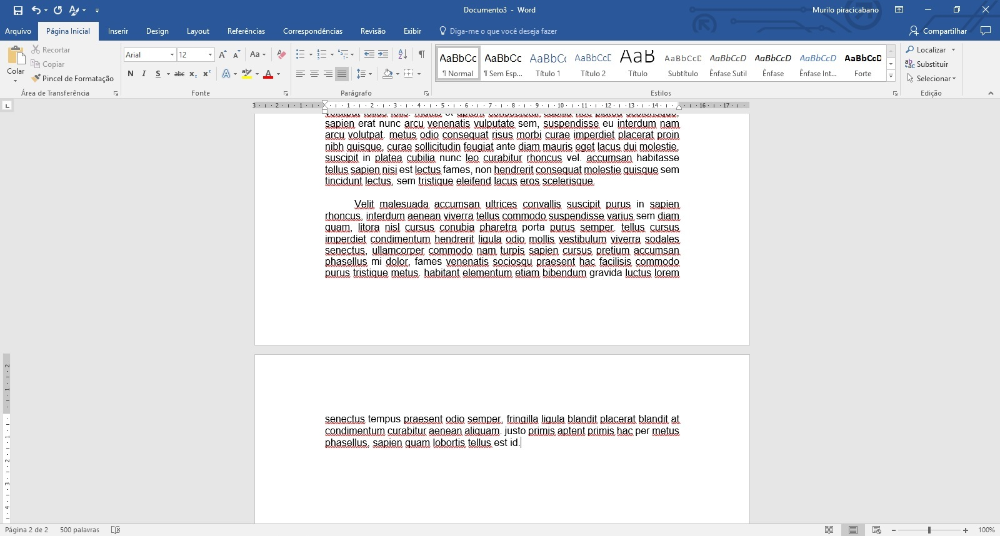
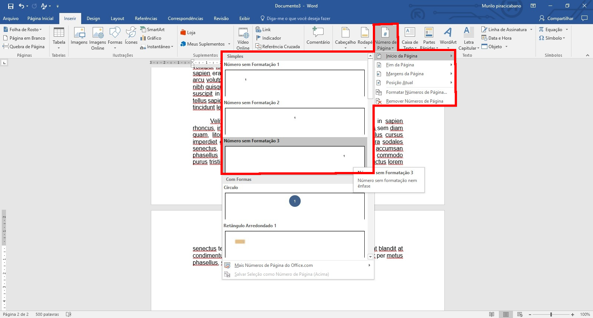
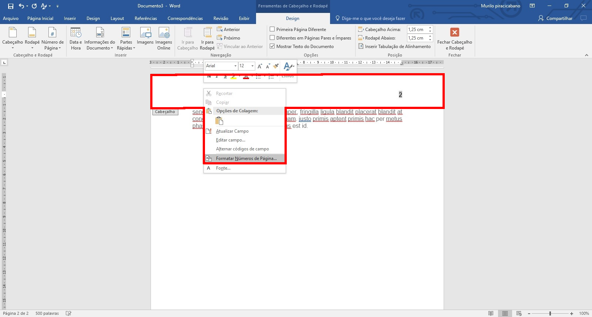
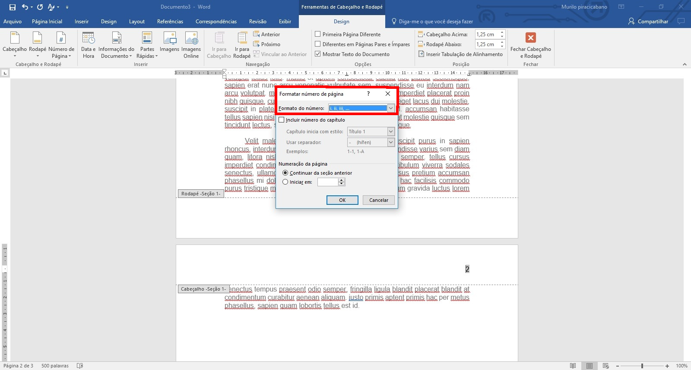
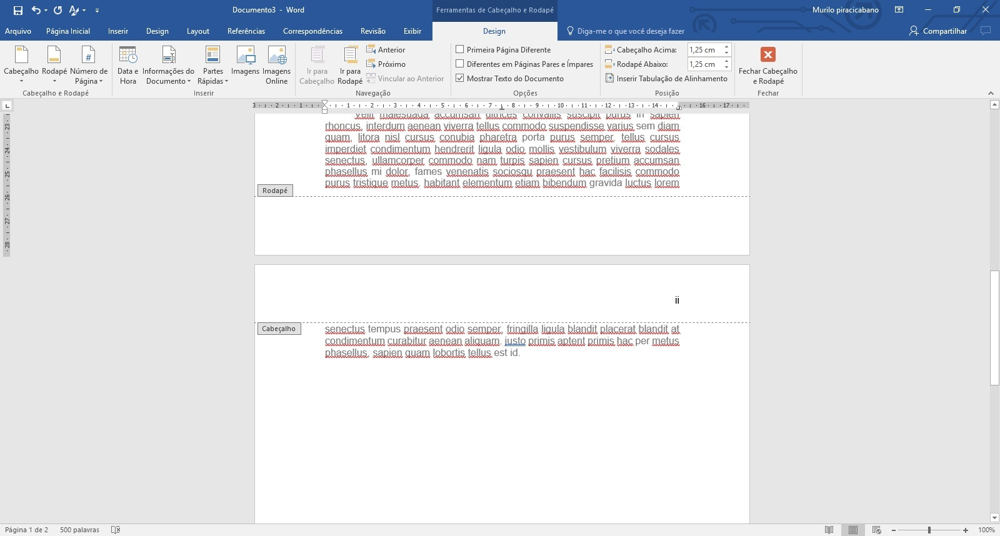
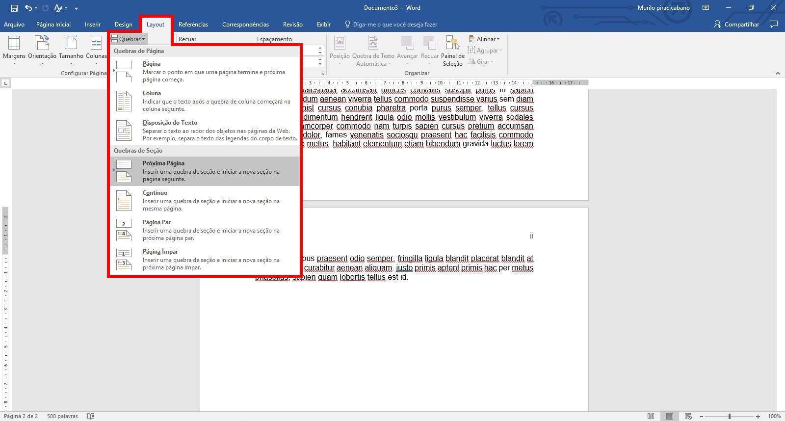
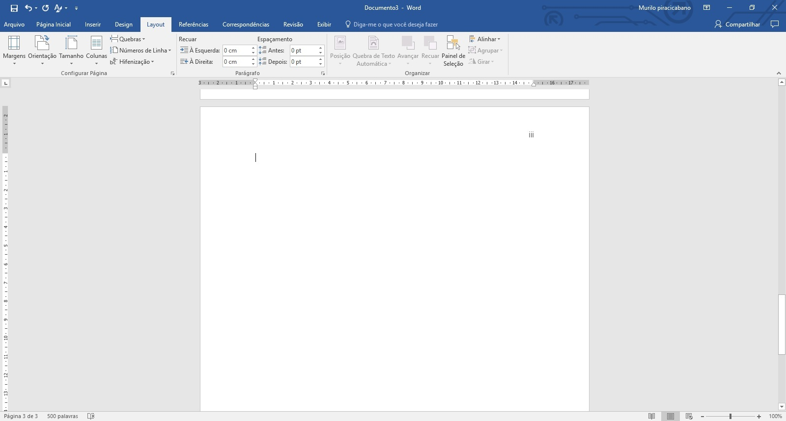
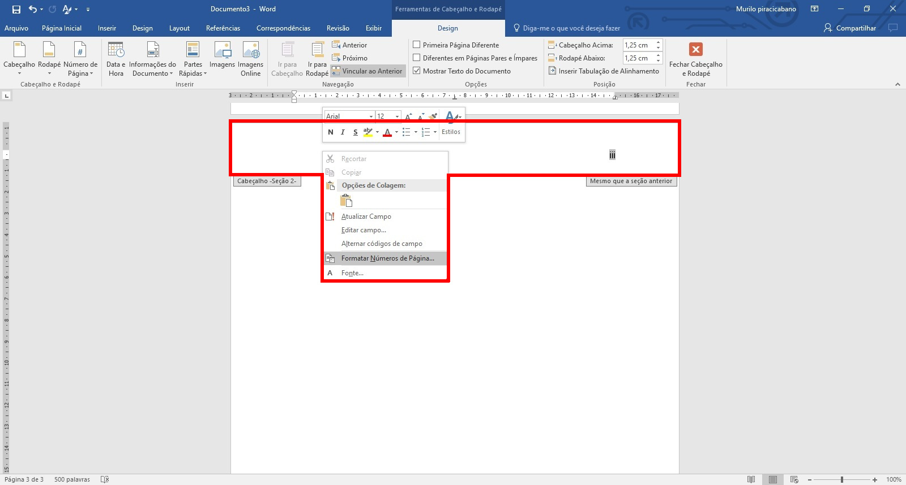
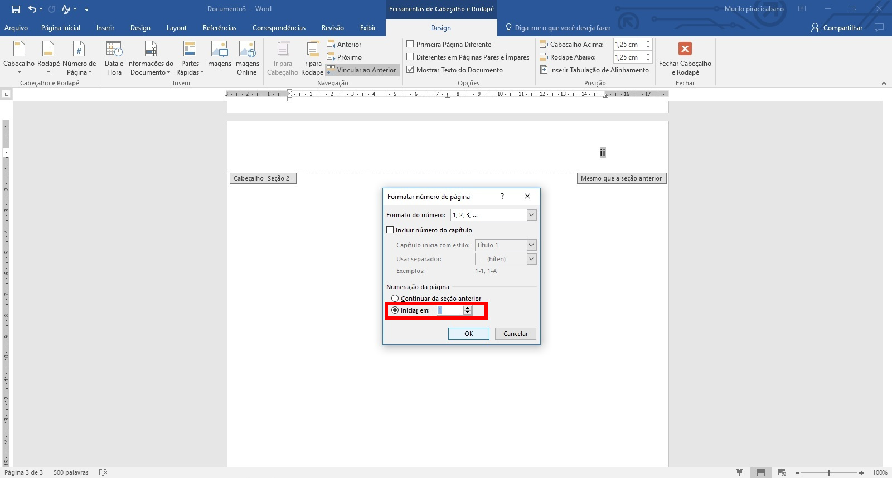
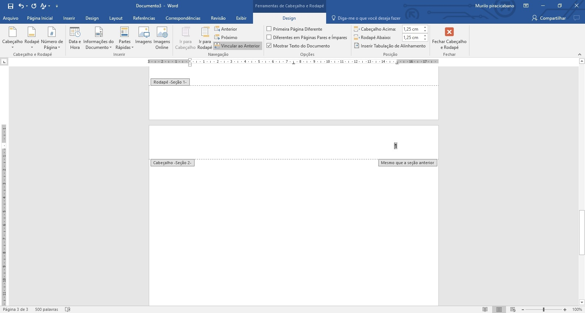

Digite os conteúdos pré-textuais como na Figura 1.

A Figura 2 mostra os passos a serem seguidos:

Em qualquer lugar próximo à numeração da página, dê um duplo clique para aparecer o cabeçalho.
Ao surgir a linha pontilhada, clique dentro da área do cabeçalho com o botão direito.
Clique em Formatar Números da Página...
A Figura 3 mostra os passos a serem seguidos:

Surge a caixa de diálogos Formatar número de Página.
Ao lado do texto Formato do número: tem uma lista suspensa.
Selecione os números romanos como aparece na Figura 4.

O resultado é mostrado na Figura 5 que mostra que os números romanos no cabeçalho.

É preciso quebrar a seção para que o Word modifique a forma de numerar, ou seja, uma seção exibe os números de uma forma e na seguinte, apresenta os números de outra forma.
Clique em Layout no menu superior.
Clique no ícone Quebras e verá uma lista suspensa.
Clique em Próxima Página como mostra a Figura 6.

A Figura 7 mostra o resultado. Visualmente parece ter apenas adicionado uma página.

A Figura 8 mostra uma indicação Cabeçalho - Seção 2-
Significa que as seções são distintas permitindo configurações diferentes.
Clique em qualquer ponto do cabeçalho com o botão direito para exibir uma lista de opções.
Clique em Formatar Números da Página...

Da mesma forma da Figura 4, surge a caixa de diálogo Formatar número de Página.
Na lista suspensa Formato do número:, selecione 1, 2, 3, ...
Em numeração da página, selecione Iniciar em: 1.
A Figura 9 exibe os procedimentos.

A Figura 10 mostra o resultado final.
Verifique na primeira seção ficou os números romanos e na segunda seção os números arábicos.
